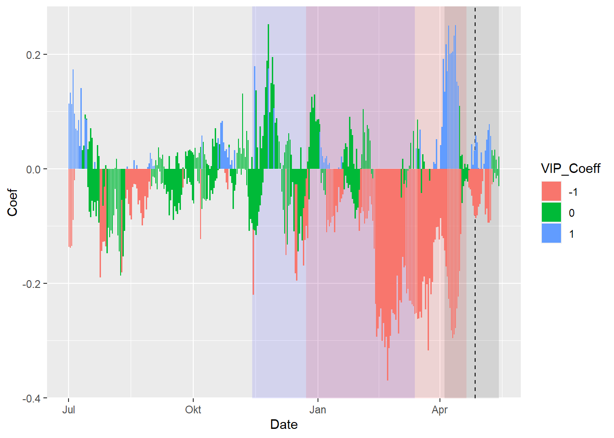

Chapter 18 Delineating temperature response phases with PLS regression
1. Replicate the PLS analysis for the Roter Boskoop dataset that you used in a previous lesson.
library(chillR)
library(kableExtra)
Boskoop<-read_tab("data/Roter_Boskoop_bloom_1958_2019.csv")
Boskoop_first<-Boskoop[,1:2]
Boskoop_first[,"Year"]<-substr(Boskoop_first$First_bloom,1,4)
Boskoop_first[,"Month"]<-substr(Boskoop_first$First_bloom,5,6)
Boskoop_first[,"Day"]<-substr(Boskoop_first$First_bloom,7,8)
Boskoop_first<-make_JDay(Boskoop_first)
Boskoop_first<-Boskoop_first[,c("Pheno_year","JDay")]
colnames(Boskoop_first)<-c("Year","pheno")
kable(Boskoop_first[1:5,]) %>%
kable_styling("striped", position = "left",font_size = 8)| Year | pheno |
|---|---|
| 1958 | 129 |
| 1959 | 104 |
| 1960 | 115 |
| 1961 | 99 |
| 1962 | 134 |
KA_temps<-read_tab("data/TMaxTMin1958-2019_patched.csv")
KA_temps<-make_JDay(KA_temps)
kable(KA_temps[1:5,]) %>%
kable_styling("striped", position = "left",font_size = 8)| DATE | YEARMODA | Year | Month | Day | Tmin | Tmax | Tmin_source | Tmax_source | no_Tmin | no_Tmax | JDay |
|---|---|---|---|---|---|---|---|---|---|---|---|
| 01-01-58 | 19580101 | 1958 | 1 | 1 | 5.0 | 7.50 | NA | NA | FALSE | FALSE | 1 |
| 02-01-58 | 19580102 | 1958 | 1 | 2 | 1.5 | 9.00 | NA | NA | FALSE | FALSE | 2 |
| 03-01-58 | 19580103 | 1958 | 1 | 3 | -5.5 | 1.10 | NA | NA | FALSE | FALSE | 3 |
| 04-01-58 | 19580104 | 1958 | 1 | 4 | -5.5 | 0.50 | NA | NA | FALSE | FALSE | 4 |
| 05-01-58 | 19580105 | 1958 | 1 | 5 | 3.5 | 2.75 | NA | NA | FALSE | TRUE | 5 |
PLS_results<-PLS_pheno(KA_temps,Boskoop_first)
kable(PLS_results$PLS_summary[1:5,]) %>%
kable_styling("striped", position = "left",font_size = 8)| Date | JDay | Coef | VIP | Tmean | Tstdev |
|---|---|---|---|---|---|
| 801 | -152 | -0.0550839 | 0.4813947 | 18.32970 | 1.914004 |
| 802 | -151 | -0.0280286 | 0.4583224 | 18.30846 | 1.884389 |
| 803 | -150 | 0.0034428 | 0.4856287 | 18.27148 | 1.844368 |
| 804 | -149 | 0.0267715 | 0.4904789 | 18.23742 | 1.886276 |
| 805 | -148 | 0.0250187 | 0.4832248 | 18.19609 | 1.884567 |
2. Replicate the PLS analysis for the Roter Boskoop dataset that you used in a previous lesson.
library(ggplot2)
PLS_gg<-PLS_results$PLS_summary
PLS_gg[,"Month"]<-trunc(PLS_gg$Date/100)
PLS_gg[,"Day"]<-PLS_gg$Date-PLS_gg$Month*100
PLS_gg[,"Date"]<-ISOdate(2002,PLS_gg$Month,PLS_gg$Day)
PLS_gg[which(PLS_gg$JDay<=0),"Date"]<-
ISOdate(2001,
PLS_gg$Month[which(PLS_gg$JDay<=0)],
PLS_gg$Day[which(PLS_gg$JDay<=0)])
PLS_gg[,"VIP_importance"]<-PLS_gg$VIP>=0.8
PLS_gg[,"VIP_Coeff"]<-factor(sign(PLS_gg$Coef)*PLS_gg$VIP_importance)
VIP_plot<- ggplot(PLS_gg,aes(x=Date,y=VIP)) +
geom_bar(stat='identity',aes(fill=VIP>0.8))
VIP_plot <- VIP_plot +
scale_fill_manual(name="VIP",
labels = c("<0.8", ">0.8"),
values = c("FALSE"="grey", "TRUE"="blue")) +
theme_bw(base_size=15) +
theme(axis.text.x = element_blank(),
axis.ticks.x = element_blank(),
axis.title.x = element_blank() )
VIP_plot
coeff_plot<- ggplot(PLS_gg,aes(x=Date,y=Coef)) +
geom_bar(stat='identity',aes(fill=VIP_Coeff)) +
scale_fill_manual(name="Effect direction",
labels = c("Advancing", "Unimportant","Delaying"),
values = c("-1"="red", "0"="grey","1"="dark green")) +
theme_bw(base_size=15) +
ylab("PLS coefficient") +
theme(axis.text.x = element_blank(),
axis.ticks.x = element_blank(),
axis.title.x = element_blank() )
coeff_plot
temp_plot<- ggplot(PLS_gg) +
geom_ribbon(aes(x=Date,ymin=Tmean-Tstdev,ymax=Tmean+Tstdev),
fill="grey") +
geom_ribbon(aes(x=Date,ymin=Tmean-Tstdev*(VIP_Coeff==-1),
ymax=Tmean+Tstdev*(VIP_Coeff==-1)),
fill="red") +
geom_ribbon(aes(x=Date,ymin=Tmean-Tstdev*(VIP_Coeff==1),
ymax=Tmean+Tstdev*(VIP_Coeff==1)),
fill="dark green") +
geom_line(aes(x=Date,y=Tmean)) +
theme_bw(base_size=15) +
ylab(expression(paste(T[mean]," (°C)")))
temp_plot
library(patchwork)
plot<- (VIP_plot +
coeff_plot +
temp_plot +
plot_layout(ncol=1,
guides = "collect")
) & theme(legend.position = "right",
legend.text = element_text(size=8),
legend.title = element_text(size=10),
axis.title.x=element_blank())
plot
3. Write down your thoughts on why we’re not seeing the temperature response pattern we may have expected. What happened to the chill response?